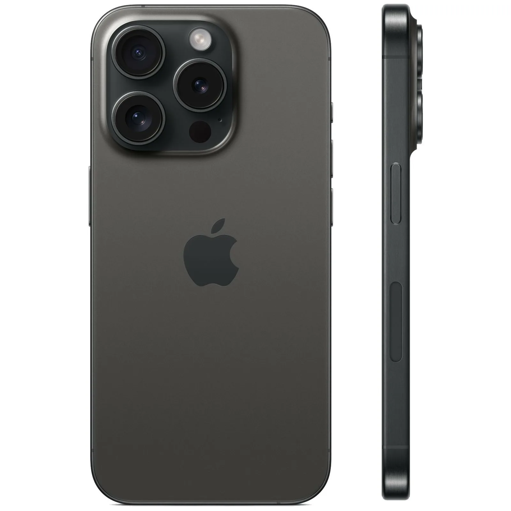

Apple iPhone 15 Pro — флагманский смартфон с титановым корпусом и чипом A17 Pro. Оснащён продвинутой камерой с оптическим зумом 5x, экраном Super Retina XDR с технологией ProMotion и портом USB-C. Обеспечивает высокую производительность для игр, съёмки видео и повседневных задач.
Apple iPhone 15 Pro — первый iPhone с титановым корпусом, который делает смартфон одновременно прочным и удивительно лёгким. Чип A17 Pro, изготовленный по 3-нм техпроцессу, обеспечивает непревзойдённую производительность и энергоэффективность. Экран Super Retina XDR с поддержкой ProMotion адаптивно меняет частоту обновления от 1 до 120 Гц, экономя заряд при статичном изображении. Камера с оптическим зумом 5x и основным сенсором 48 Мп позволяет снимать профессиональное видео в формате ProRes прямо на устройство. Переход на разъём USB-C обеспечивает совместимость с широким спектром аксессуаров и скорость передачи данных USB 3.0. Функция Dynamic Island заменяет традиционную чёлку и интерактивно отображает уведомления, таймеры и активные процессы.
© Click Store. Все права защищены.